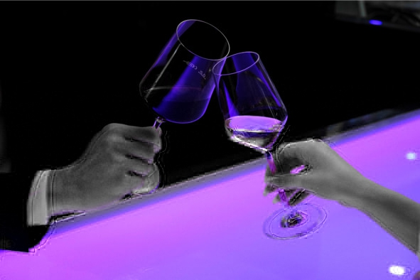
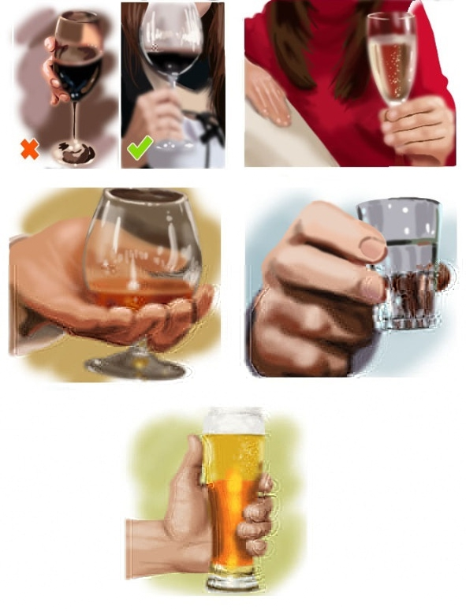
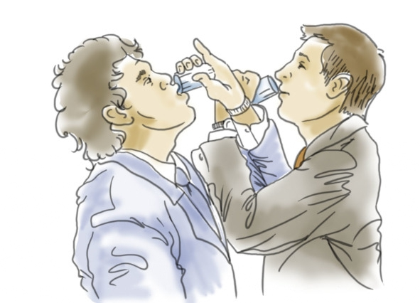

Понятие аперитивов и дижестивов
При составлении меню важно правильно скомбинировать и вовремя подать алкогольные напитки, чтобы они хорошо сочетались как между собой, так и с блюдами на столе. Для этого все спиртное разделяют на две группы: аперитивы и дижестивы.
Аперитив (от лат. aperire – «открывать») – это группа алкогольных напитков, подаваемых перед едой, которые возбуждают аппетит и способствуют пищеварению. Аперитивами могут быть и безалкогольные напитки: простая, минеральная, содовая вода или кислые соки (апельсиновый, лимонный, томатный).
Алкогольные напитки, подаваемые в качестве аперитивов: абсент, шампанское, вермут, водка, пиво, херес, портвейн, виски, коньяк и арманьяк, ром, джин, крепкие (30—40% об.) алкогольные коктейли.
Все аперитивы делятся на три группы:
– одинарные – состоят только из одного напитка;
– комбинированные – несколько напитков, подающихся одновременно;
– смешанные – специально приготовленные смеси (коктейли).
При выборе аперитивов соблюдают следующие правила:
– не подают горячие, теплые и сладкие напитки;
– количество алкоголя должно пробудить у гостей аппетит, а не вызвать сильное опьянение;
– нужно правильно подбирать закуску, например, перед горячим супом нельзя ставить холодное пиво.
Дижестив (от лат. digestivus – способствующие пищеварению) – это спиртные напитки, помогающие перевариванию пищи, которые подают в конце трапезы и на десерт. Дижестивы должны быть крепче аперитивов. Это объясняется тем, что после плотного обеда вкус легкого спиртного нормально восприниматься не будет. К безалкогольным напиткам после еды относятся чай и кофе.
Дижестивами могут быть ликеры и бальзамы, крепленые и десертные вина, граппа, кальвадос, темный ром, виски и коньяк.
Одни и те же алкогольные напитки могут быть как аперитивами, так и дижестивами, но их нельзя дублировать во время одного застолья. При одинаковой крепости светлое спиртное подают в качестве аперитива, темное – как дижестив.
Как правильно держать бокал или рюмку с напитком
Соблюдение социального этикета – пропуск в высшее общество и свидетельство хорошего воспитания, однако знание того, как правильно держать бокал, позволит не только блеснуть манерами, но и насладиться вкусом напитка, поддерживая нужную температуру.
«Тюльпаны», фужеры и прочие бокалы «с ножкой» придуманы не просто так – именно такая форма помогает напитку раскрыться и насытиться кислородом. Дегустатору ни в коем случае не следует обхватывать чашу ладонью, каким бы удобным это ни казалось – мало того что на тонком стекле останутся неопрятные отпечатки, напиток еще и нагреется, что обязательно скажется на его вкусовых качествах.
Бокалы для красного, белого вина и шампанского держат исключительно за ножку, причем как минимум тремя пальцами (чем полнее сосуд, тем сложнее его удержать, так что этикет не запрещает использовать все пять пальцев). Не нужно манерно хвататься за подставку – так поступают только опытные сомелье и владельцы собственных винных погребов. Подражание профи только демонстрирует желание выделиться. Это касается и оттопыренного в сторону мизинца.
Коньячный бокал можно уютно держать в ладони – этому напитку тепло руки пойдет только на пользу. Для большего эффекта снифтер можно чуть покачать, чтобы янтарная жидкость омыла стенки – так коньяк станет еще ароматнее и вкуснее.
Водочную рюмку крепко берут тремя пальцами и сразу опрокидывают содержимое, не смакуя.
Пивные бокалы также берут по-простому всей ладонью, однако, чтобы холодный лагер, стаут или эль не нагрелся, его не держат в руках, а делают глоток и сразу ставят сосуд на стол. В Баварии и в некоторых пивных барах в ходу специальные литровые кружки для пива, их держат за массивную ручку, поддерживая тяжелую ношу снизу.

Зачем и как правильно произносить тосты
Тост – фраза или короткая речь, произносимая перед тем, как осушить бокал с алкогольным напитком. Обычно в тосте обозначено, «за что» пьют – за здоровье всех или кого-либо из присутствующих, за любовь, удачу, денежный успех. Могут быть и менее прямолинейные цели – например, «чтобы наши желания всегда совпадали с нашими возможностями». В неформальной обстановке достаточно обойтись одним словом-«здравицей» («Будем» или «Вздрогнем!» в России, «Cheers» в Англии, «Prosit» в Германии и т. д.).
Существует несколько версий происхождения слова «тост»:
– от тюркского слова «тостакан» – деревянная посуда, из которой пьют кумыс и другие напитки;
– от английского «toast», означающего поджаренный кусочек хлеба. Возможно, потому, что в античном Риме по праздникам было принято раздавать беднякам подогретые булочки, политые вином. А может, благодаря британской традиции ставить перед оратором стакан воды и хрустящий тост, чтобы выступающий мог подкрепиться во время долгой речи.
Главная цель тоста – превратить совместное распитие спиртного в демонстрацию дружбы, уважения или добрых намерений. В зависимости от страны и культуры ритуал может варьироваться от нескольких формальных слов, сопровождающихся легким приподниманием бокала в сторону виновника торжества, до цветистых и продолжительных речей, что популярно на Кавказе.
Современные исследователи считают, что традиция произносить тосты началась от античных священных жертвоприношений. Люди верили, что за выплеснутое вино боги одарят просителя здоровьем, богатством, счастьем – всем тем, чего и желают друг другу в тостах.
Особенности тостов в разных странах
На постсоветском пространстве считается, что без тоста, хотя бы формального, пьют исключительно алкоголики. В Европе же этот ритуал обязателен к исполнению только на самых торжественных мероприятиях – свадьбе, юбилее, фуршете по поводу инаугурации президента или вручения престижной награды. В таких случаях тема тостов очевидна – виновник (и) торжества.
Поводом для тоста может стать любое торжественное событие: Новый год, свадьба, юбилей, проводы на пенсию, новоселье и т. д. Порядок тостов варьируется в зависимости от обстановки – например, офицеры военно-морского флота Великобритании в первую очередь всегда пьют за что-то, связанное с морем. За что именно – зависит от дня недели. В понедельник – за «наши корабли в море», во вторник – за «наших моряков» и т. д. В России пить можно за что угодно – начиная от погоды и заканчивая успехом вовсе незнакомых людей, например тех же голливудских актеров.
Пока тостующий не закончит речь, пить нельзя. Если он произносит «До дна» или «Не чокаясь», это требование обязательно к исполнению. Иногда во время тоста нужно встать – например, если пьют «за тех, кого с нами нет» или за особо уважаемую персону.
Иногда тост может быть формой социального взаимодействия и обозначением гражданской позиции – например, если человек демонстративно отказывается выпить за кого-то из гостей, страну или политическую партию. В этом случае протестующий участник застолья должен нарочито отставить бокал в сторону и остаться сидеть, когда остальные встанут. Такое поведение считается вызывающим и зачастую становится поводом для серьезного конфликта, переходящего в драку.
Что касается очередности тостов, то в России строгой последовательности нет. Однако первый тост всегда поднимают за виновника торжества, второй – за его родителей. Третий тост уже сильно зависит от компании – в обычной ситуации пьют за друзей или любовь, но если за столом собрались военные, пожарные или представители другой опасной профессии, то в третью очередь вспоминают погибших товарищей. Четвертый тост нередко провозглашают за мужчин, а дальше регламента нет, зачастую участники застолья перестают считать.
Правила этикета тостов в России
– На крупных мероприятиях тосты произносят по очереди, начиная от хозяина дома, тамады или официального распорядителя мероприятия (на свадьбе это обычно свидетель).
– Супружеская пара может произнести один тост «от семьи». Женщина имеет право пропустить свою очередь, если не в настроении или ей нечего сказать.
– Торжественные тосты начинаются с приветствия и/или благодарности всем присутствующим.
– Пока произносится тост, нельзя есть, пить, разговаривать, играть со смартфоном или отвлекаться любым другим образом.
– Не обязательно выпивать весь бокал, можно только пригубить спиртное (если не прозвучала фраза «До дна»).
– В маленькой компании нужно постараться чокнуться со всеми, на официальных мероприятиях достаточно соприкоснуться бокалами с соседями по столу или вовсе опустить эту часть ритуала.
– Хороший тост должен быть емким, запоминающимся и эмоциональным. Юмор уместен, но сарказм или ирония – нет. Если не можете изобрести ничего оригинального, воспользуйтесь готовым шаблоном, это будет лучше, чем мямлить с бокалом в руке.
– Чокаться пустым бокалом или безалкогольным напитком считается оскорбительным.
Как правильно говорить тосты
1. Подготовка. Лучше не надеяться, что вдохновение придет в последний момент и нужные слова польются рекой. В большинстве случаев наоборот – сложно выстроить внятную речь. Чтобы тост получился интересным и осмысленным, следует подготовиться заранее.
Структура классического тоста:
– тематическое вступление (связывает речь тостующего с происходящим за столом);
– история из прошлого (как раньше было);
– развязка или как стало теперь (критиковать, врать и откровенно льстить в тостах неуместно);
– окончание (пожелания в честь торжества и призыв поднять бокалы).
Написанный тост произносят несколько раз перед зеркалом вслух. Письменная и устная речь отличаются, не всегда текст хорошо воспринимается на слух. Нужно подобрать правильный темп, интонацию и силу голоса, запланировать паузы в нужных местах. Желательно говорить короткими понятными предложениями. Оптимальное время выступления – 1—3 минуты.
Опытный тостующий всегда заучивает тост на память, чтобы в нужный момент выступить без листка-подсказки, и продумывает несколько вариантов поздравлений или даже тостов, на случай если запланированное пожелание скажет другой оратор.
2. Очередность. Первый тост произносит хозяин дома или руководитель самого высокого ранга, потом близкие родственники, друзья или начальники на ступень ниже. Зная количество и состав приглашенных гостей, можно примерно вычислить свою очередь.
Просьба сказать тост раньше времени считается невежеством. Также бескультурно требовать тост от сидящего рядом за столом соседа, поскольку человек может быть не готовым в этот момент. Обычно тост говорят раз в 10—15 минут.
3. Красивое произношение. Даже запоминающийся тост можно испортить неправильной подачей. Перед тем как начать речь, тостующий должен взять свой бокал, встать и проследить, чтобы у всех присутствующих были наполнены бокалы. Далее повернуться к виновнику торжества (если празднует весь коллектив, плавно обойти взглядом всех гостей), сделать глубокий вдох и четко с интонацией, нужной громкостью и улыбкой на лице (по радостному поводу) сказать тост.
Нельзя затягивать речь дольше трех минут, поскольку гостям это надоедает, а само выступление из поздравления превращается в нравоучение. Правильно закончить тост призывом поднять бокалы, это своеобразная отмашка присутствующим, которые не следили за ходом мысли оратора, а такие есть почти на каждом празднике.
Традиция чокаться бокалами (рюмками)
Чокаться – неотъемлемая традиция русского застолья, следующая сразу за тостом, в Европе и США чоканье не так популярно. Теперь это просто красивая церемония, символизирующая дружбу и единство всех собравшихся за столом, но так было не всегда. Исследователи считают, что чоканье повлияло на ход истории, спасая жизни монархов.
Существует три версии появления традиции чокаться:
1. Изгнание духов. В древности люди верили, что их жизнью управляют божества и злые духи. Первых нужно задобрить, вторых – прогнать. Во время еды злой дух может попасть в тело через открытый рот. Чтобы этого не случилось, нужно стучать бокалами. Громкий звон отпугивает нечистую силу.
2. Рыцарское уважение. В VII – VIII столетиях рыцари Карла Великого (короля франков и герцога Баварии) во время пиршеств подносили свои кубки в центр стола, несколько раз чокаясь. Это символизировало единство, силу и непобедимость их братства, в котором каждый уважает друг друга. Вряд ли рыцари придумали эту традицию, поскольку чокаться начали намного раньше. Скорее всего, воины лишь переняли этот ритуал у других народов, наделив его новым смыслом.
3. Защита от яда. Самая правдоподобная версия. С античных времен борьба за власть сопровождалась отравлениями. Каждый правитель боялся, что его отравит предатель из ближайшего окружения. Чаще всего яд подмешивался во время застолий, когда жертва, расслабившись, не так внимательно следила за своим бокалом.
Для защиты придумали хитрый ритуал. Сначала хозяин отпивал из общего большого сосуда. Потом содержимое разливалось по кубкам каждого пирующего. Перед тем как пригубить напиток, гости собирались в кругу и со всей силы ударяли бокалы друг о друга, чтобы часть содержимого выплеснулась и перемешалась в кубках других участников застолья. Если хотя бы в одном сосуде окажется яд, отравятся все. В средневековой Франции было принято не только чокаться, но и обмениваться бокалами. В случае отказа человек считался врагом и потенциальным отравителем.
Простолюдины переняли традицию чокаться у аристократов, не понимая ее истинного значения, им просто нравилось быть похожими на своих господ. Церемония прижилась в европейской культуре, появились даже правила этикета.
Как правильно чокаться
1. Принято чокаться только спиртными напитками. Шампанское или вино в правильных фужерах идеально передают атмосферу торжества.
2. Бокал (рюмку) подносят на уровень глаз партнера или чуть ниже, считается неприличным держать фужер выше головы. В момент чоканья желательно смотреть друг другу в глаза и улыбаться.
3. Желательно держать бокал за ножку, чтобы при соприкосновении с другим бокалом он издал мелодичный звон. При обхвате за корпус раздастся глухой стук. Неприлично оттопыривать пальцы и чокаться нижним краем фужера.
4. Нельзя тянуть руку через весь стол, доставляя неудобство гостям и опрокидывая бутылки, лучше подойди к человеку ближе или обозначить приветствие легким поднятием руки.
5. При чоканье с женщиной, почетным гостем, пожилым человеком или начальником мужчина должен опустить свою рюмку чуть ниже. Дамы не протягивают фужеры первыми.
6. На похоронах и поминках не чокаются, поскольку этот ритуал ассоциируется с праздником.
7. Во время официальных приемов, банкетов и торжеств, на которых гости плохо знают друг друга, чокаются очень редко. Это больше семейная и дружеская традиция.
8. В некоторых компаниях принято чокаться только после первого тоста, в других – после каждого. С чоканьем связано множество примет, которые сложно объяснить здравым смыслом. Например, жене нельзя чокаться с мужем, чтобы не чокнуться (потерять рассудок). Девушка должна в последнюю очередь чокаться с мужчиной (лучше неженатым), это обеспечит ей удачный брак и финансовое благополучие. Лучше заранее узнать, а во время застолья соблюдать суеверные традиции компании, чтобы не обидеть тех, кто верит в эти приметы.
Что значит пить на брудершафт
Брудершафт (в переводе с немецкого Bruderschaft «братство») – застольная традиция, в ходе которой два человека одновременно опустошают свои бокалы со спиртным, особым образом скрещивая руки. Есть два вида брудершафта: дружеский и свадебный.
В свою очередь выражение «Мы с вами на брудершафт не пили» означает, что человеку не нравится слишком открытая форма обращения, он хочет общаться с собеседником в более официальном тоне. Обычно подобная ситуация возникает при явном оскорблении или нарушении субординации.
Традиция пить на брудершафт появилась во времена Средневековья, этот ритуал свидетельствовал о мирных отношениях между участниками застолья. В некоторых странах, например в Италии, влюбленные тоже пили на брудершафт, а после этого целовались. Если напиток хотя бы одного из молодоженов был отравлен, при поцелуе яд передался бы другому. Интересно, что хотя само слово «брудершафт» немецкое, в Германии эта традиция называется по-другому – «Dutz trinken», в буквальном переводе «питье на ты».
Дружеский брудершафт выполняется следующим образом: пьющие наполняют бокалы, скрещивают руки в локтях и выпивают содержимое своих бокалов, смотря друг другу в глаза. После этого следует дружеский поцелуй.

Дружеский брудершафт
Свадебный брудершафт является первым поцелуем жениха и невесты во время бракосочетания. Молодожены пьют по обычной схеме из бокалов, перевязанных лентой. Но поцелуй должен быть не дружеским, а страстным. Далее пара выбрасывает бокалы через левое плечо.
Отношение к алкоголю в религиях мира
Состояние измененного сознания, достигаемое с помощью алкогольного опьянения, в разных народах в свое время воспринималось как акт божественного откровения, способ общения с «тонким» миром, путь познания скрытого. Именно под воздействием спиртного нередко создаются произведения искусства, решаются научные парадоксы и находятся ответы на вопросы, казавшиеся неразрешимыми.
Религиозные доктрины мира не могли не включить в свою концепцию такой значимый фактор человеческого психоэмоционального состояния, тем более что даже сегодня, в век научного знания и материализма, нет единого мнения, что же именно собой представляет состояние измененного сознания и нет ли в нем сакральной (священной) подоплеки.
Алкоголь в христианстве
Эта религия относится к алкоголю положительно и даже с некоторым уважением: красное вино, в частности, считается кровью Христовой и входит в таинство причастия. Немало упоминаний перебродившего виноградного сока встречается и в Новом Завете: достаточно вспомнить известный сюжет о превращении воды в вино на свадьбе. В Ветхом Завете, в Песни Песней, влюбленный юноша (сам царь Соломон) сравнивается с виноградарем, и его возлюбленная Суламифь – сестра владельцев виноградника.
Не попадают под запрет и другие напитки. Например, жена известного немецкого богослова, реформатора и переводчика Библии Мартина Лютера была пивоваром, а семейство Гиннес создало свой знаменитый сорт пива в честь поклонения Иисусу Христу.
С другой стороны, в христианстве порицается чрезмерное опьянение, когда человек не может контролировать себя и теряет достойный облик (сюжет о дочерях Лота, сюжет о сыновьях Ноя – Хаме, Симе и Иафете). Не находят сочувствия и запойные пьяницы, так как Священное Писание учит своих последователей всегда быть хозяевами своего тела, чтобы не совершить случайно предосудительный поступок и не нанести вред другим людям.
При желании в Библии можно найти цитаты как за, так и против алкоголя, одно можно сказать совершенно точно: спиртные напитки в христианстве не запрещены, а в определенных ритуальных ситуациях даже прямо показаны к употреблению. Этому есть объяснения.
Еще в глубокой древности люди подметили, что от сырой воды можно заболеть. Но в старину кипяток был не так уж доступен: слишком дорого растапливать дровяную печь, чтобы приготовить чашку травяного отвара. В южных странах, где из-за жары проблема стояла особенно остро, люди приспособились обеззараживать воду вином. Однако тех, кто пил неразбавленное вино, считали горькими пьяницами, даже на разводивших напиток в пропорции 1:1 в обществе смотрели косо. Нормальным считалось соотношение количества вина к количеству воды 1:2, а то и 1:4. Бедняки вместо вина добавляли в воду фруктовый уксус. Отсутствие у человека средств на покупку вина или уксуса расценивалось как признак крайней нищеты.
Христианство зародилось на Ближнем Востоке, и в церковном уставе отражены местные реалии быта. Типикон, книга, регламентирующая порядок питания во время постов, написан на основе уставов палестинских монастырей (преимущественно обители Саввы Освященного близ Иерусалима), с учетом традиции Св. горы Афон. В Типиконе вино упоминается наравне с другими продуктами и напитками, к примеру елеем (растительным маслом), квасом или укропом (травяным отваром).
Апостолы и теологи относились к вину как к продукту, поддерживающему силы и укрепляющему здоровье. Апостол Павел, обращаясь к своему ученику Тимофею, советовал ему: «Впредь пей не одну воду, но употребляй немного вина, ради желудка твоего и частых твоих недугов (1-е Тимофею, 5:23)».
Злоупотребление алкоголем в христианстве считается тяжким грехом. Тот же апостол Павел запрещал своей пастве «упиваться вином»: «Лучше не пить вина и не делать ничего такого, от чего брат твой претыкается, или соблазняется, или изнемогает» (Рим. 14:21). К умеренности призывал и Иоанн Златоуст: «Вино дано для того, чтобы быть веселым, а не для того, чтобы быть посмешищем; дано для укрепления здоровья, а не для расстройства; для уврачевания немощей телесных, а не для ослабления духа».
Когда христианство пришло в северные страны, оказалось, что местное население не знает вкуса вина, зато варит пиво. Иоанн Златоуст, основывавший обители в северных провинциях Римской империи, писал о необходимости внести изменения в устав в связи с более суровым климатом. Позже, в Средние века, монахи Германии во время поста даже заменяли хлеб пивом.
На Руси разрешение пить алкогольные напитки восприняли слишком прямолинейно, так что церковным властям пришлось вводить дополнительные запреты. Прп. Иосиф Волоцкий, XV—XVI в.: «Подобает прежде всего заботу и попечение иметь о том, чтобы не было в обители ни в трапезах, ни в кельях пития, от которого пьянство бывает». Св. Тихон Задонский, XIX в.: «Хочешь служить Богу, то первое: брось сам пить пиво, вино и водку; ни много ни мало, а совсем брось, для того чтобы не подавать соблазна людям». Св. Феофан Затворник, XIX в.: «Христианам скорее идет – совсем не пейте, – разве только в крайностях, – в видах врачевания… Винопитие совсем должно быть изгнано из употребления из среды христиан».
Алкоголь в исламе
В этой религии алкоголь полностью запрещен – по легенде именно табу на спиртное в свое время стало причиной, почему князь Владимир решил крестить Русь, а не обратить ее в мусульманство. Коран считает: что запрещено в большом количестве, не разрешено и в малом, поэтому христианский подход, прославляющий умеренность, здесь неприменим – спиртное считается корнем зла и греха, нечистым и скверным порождением Иблиса, джинна, сбивающего верующих с истинного пути.
Разумеется, этот запрет распространяется и на другие дурманящие вещества, однако доподлинно известно, что некоторые мусульмане все-таки не отказывают себе в простых радостях: например, большим любителем вина был великий иранский поэт и ученый Омар Хайям, многие современным исламские исследователи также находят в Коране подтверждения тому, что алкоголь не так страшен, как принято считать. Например, Аллах сказал, что «первая капля вина губит человека» – получается, если ее стряхнуть, то оставшийся в стакане напиток совершенно безвреден! Достаточно лояльное отношение к алкоголю в демократичной и светской Турции, в то время как в ОАЭ или Саудовской Аравии за появление на улице в нетрезвом виде можно угодить в тюрьму.
Официальная позиция ислама остается такой же, как и тысячу лет назад: алкоголь строжайше запрещен.
Буддизм и алкоголь
Концепция жесткого запрета чего-либо плохо соотносится с самой философской и гуманной из всех мировых религий, однако в буддизме отношение к алкоголю скорее негативное, чем позитивное. Например, «Восьмеричный путь» включает в себя следование канонам правильного поведения, которое подразумевает отказ от пьянства. Значит ли это, что буддисту нельзя даже пригубить полбокальчика легкого вина? Нет, только если монаху – ведь замутненное сознание отдаляется от просветления.
К мирянам же в буддизме требования минимальны, и бытовые «прегрешения» им прощаются. Состояние постоянной осознанности – обязанность того, кто идет по пути духовного совершенствования, а алкоголь, равно как и наркотики, затуманивает разум.
Буддизм неоднороден: в нем есть и махаяна, и хинаяна, и тантризм, и дзен, и другие направления, каждое из которых по-своему относится к алкоголю. В сухом остатке можно сказать следующее: буддизм не считает вино скверной и богомерзким напитком, но и не поощряет его употребление, особенно сверх меры.
Достижения и провалы «сухих законов» в России и США
«Сухой закон» – явление не новое и не уникальное. Еще в Древнем Китае вводились ограничения на производство и употребление спиртного. А если кто-то думает, что все подобные указы и регламенты остались в полудиком прошлом, пусть вспомнит, во сколько прекращается продажа алкогольной продукции в его регионе. Местные власти нередко сами проявляют инициативу, запрещая торговать спиртосодержащими напитками в праздничные дни и ночное время.
Николай II, Первая мировая война и первые годы советской власти
Насколько остро стояла проблема алкоголизма в царской России, говорит хотя бы тот факт, что в те времена извозчикам и официантам было принято давать не «на чай», а «на водку». 1913 год стал самым «пьющим» в истории страны, и уже в 1914 император официально запретил продажу крепкого алкоголя в лавках.
Пропустить чарку водки отныне можно было только в ресторанах. Изначально предполагалось, что это будет временная мера, однако вступление России в Первую мировую войну заставило продлить «сухой закон» до окончания боевых действий. Но мир так и не наступил – Российская империя закончилась раньше.
Правительство новой Советской страны не спешило отменять указ своих предшественников, наоборот – поддерживало борьбу с пьянством. Официальные отчеты и «парадные» журналисты превозносили эту меру, с упоением рассказывая, насколько хорошо стало жить в новом трезвом обществе. Писали, что крестьяне, мол, больше не бьют своих жен и не пропивают получку по кабакам, а приносят все до копейки в дом, в семьях царит атмосфера мира и любви. Действительность, разумеется, была не такой радужной. Количество правонарушений, совершенных в состоянии алкогольного опьянения, снизилось, с этим поспорить трудно. Но с другой стороны, запрет на алкоголь способствовал критическому расслоению общества и росту недовольства «низов».
Под действие запрета попали только «простые» люди – господа ни в чем себе не отказывали, в ресторанах первой категории по-прежнему можно было заказать любой спиртной напиток. К тому же дворяне нередко имели собственные винные подвалы с коллекциями элитного алкоголя. Указ изначально был ориентирован не на них: это не графы с князьями устраивали пьяные дебоши в рюмочных, прогуливали работу и спали под заборами. Социальная пропасть стала еще шире. В итоге окончательно запрет был снят только в 1923 году.
Другое следствие сухого закона в России царских времен – рост мелкого мошенничества. Речь о ресторанах 2-го класса и привокзальных чайных. Официально они подпадали под действие указа, но все знали: там спокойно можно заказать самовар коньяка или бутылку якобы минеральной воды (водки). Кроме того, значительно увеличилось количество пищевых отравлений, нередко – с летальным исходом. Люди пили денатураты, лаки – все, в чем содержалась хоть капля спирта.
Михаил Горбачев и легендарный «Сухой закон» в СССР
В принципе, борьба с пьянством на территории СССР никогда и не прекращалась – в той или иной степени ограничения существовали всегда. Однако Михаил Сергеевич, пораженный масштабами потребления алкоголя на душу населения, «завинтил гайки» окончательно.
17 мая 1985 года вышел указ «Об усилении борьбы с пьянством», и современные аналитики считают, что это было началом конца Советского Союза. За антиалкогольную кампанию сам Горбачев получил две клички – «Минеральный секретарь» и «Лимонадный Джо».
Развернулась массовая антипропаганда алкоголя. Цензурировались фильмы и книги, вырубались драгоценные виноградники редчайших сортов в Крыму, Молдове, на Кавказе. Тысячами закрывались пивоварни и винзаводы.
Первым и основным эффектом этого шага стало не отрезвление нации, а дефицит бюджета – монополия на водку приносила в казну до 50% всех доходов от продажи продуктов. Увеличилось количество прогулов работы и учебы – винно-водочные отделы работали только с 14 до 19, приходилось как-то вертеться. Ну и денатурат с одеколоном, конечно, снова заняли центральное место в домашних барах рабочего класса, не говоря уже про возрождение искусства самогоноварения.
Самыми популярными «коктейлями» рабочего класса «сухой эпохи» были:
1. денатурат (спирт для технических нужд). Жидкость поджигали и ждали, пока не появится синее пламя, свидетельствующее, что метиловый спирт выгорел (очень сомнительный метод проверки). Из-за нарисованного черепа с костями на бутылке денатурата в народе это пойло называли коньяк «„Матросский“ две косточки»;
2. клей «БФ» (он же «Борис Федорович»). Для очистки в емкость с клеем опускали сверло и включали дрель на полную мощность. Постепенно сверло наматывало на себя клеящий состав, а оставшийся спирт с противным запахом радовал любителей выпить;
3. одеколоны и лосьоны. Имели более-менее нормальный запах и вкус, поэтому очень ценились. Для очистки от примесей в баночку опускали раскаленную проволоку. Подобная очистка помогала разве что морально, но без этого пить одеколон считалось некультурным;
4. политура (жидкость для отделочных работ). Напиток строителей. Для очистки в 1 л политуры добавляли 100 г соли, взбалтывали, потом удаляли осадок и пену. Любителей пить политуру было видно издалека по характерному буро-фиолетовому цвету лица;
5. дихлофос и гуталин. Самые суровые методы, когда других вариантов не оставалось. Дихлофос обычно распыляли в кружку с пивом, так как кроме алкогольного он вызывал еще и токсическое опьянение. Гуталин намазывали на кусочек хлеба. Спустя некоторое время хлеб впитывал спирт.
Положительный эффект от сухого закона в СССР тоже был: увеличилась рождаемость, выросла продолжительность жизни мужчин, люди стали откладывать больше денег в сберегательные кассы. Однако негативные последствия с лихвой компенсировали эту пользу.
Вудро Вильсон и «сухой закон» в США
«Сухой закон» в Америке, в отличие от аналогичного проекта в России, имел под собой не гуманистическое, а чисто экономическое основание: в условиях мирового кризиса и Первой мировой войны Штатам было гораздо выгоднее отправлять резко возросшее в цене зерно на экспорт, чем использовать для производства алкогольной продукции. Кроме того, большинство винзаводов и пивоваренных предприятий принадлежало немцам, и на волне возросшей патриотической идеи национального самосознания американцы не хотели становиться источником дохода для граждан враждующей страны.
В 1920 году была принята Восемнадцатая поправка к Конституции США, запрещавшая продажу, производство и транспортировку спиртных напитков. Любопытно, что сам президент Вильсон выступал против этого законопроекта и даже наложил на него вето, но конгресс сумел обойти президентский запрет, и поправка вступила в силу.
Самым очевидным последствием это шага стало появление бутлегерства – контрабанды алкоголя. На этой волне взросло и расцвело несколько крупных мафиозных кланов, на ликвидацию которых впоследствии ФБР понадобилось почти 40 лет. В знаменитой комедии «В джазе только девушки» можно увидеть, как выглядели разборки двух бутлегерских групп.
Другой антиалкогольной бедой стала коррупция – у мафиози хватало денег, чтобы купить политиков и заткнуть рот полиции.
Третья проблема – выросло производство и потребление самогона (таких людей называли муншайнерами от английского moon shine («лунный свет») – мол, они занимаются своими темными делишками исключительно ночью, при свете луны). До сих пор самогон в Америке называется «moonshine». В результате пьянство не уменьшилось, а поступления в казну резко сократились.
Был и положительный эффект – уменьшение количества травм и катастроф, снижение индивидуальной преступности (компенсирующееся ростом организованной), оздоровление нации. Впрочем, по сравнению с негативными последствиями это была капля в море, тем более что на фоне Великой депрессии всем стало не до войны с пьянством.
В 1933 году Двадцать первая поправка успешно отменила Восемнадцатую, и все вернулось на круги своя. Действующий на тот момент президент США Ф. Д. Рузвельт отпраздновал это событие приготовлением коктейля Dry Martini («сухой мартини») в прямом эфире перед телекамерами. Своим неординарным поступком Рузвельт только укрепил авторитет перед избирателями. Он показал, что и политикам его ранга не чуждо желание выпить, а отмену запрета приветствовали даже оппозиционные к Рузвельту политики.
Нелепые антиалкогольные законы
По части смешных законов, конечно, лидирует Америка, но «жемчужины» можно найти в законодательстве многих стран.
Нью-Джерси: запрещено предлагать табак и алкоголь животным в зоопарке (а вдруг согласятся, заработают пагубную привычку, потом придется водить их на собрания анонимных алкоголиков).
Сент-Луис: нельзя пить пиво, сидя на улице (стоя можно).
Чикаго: запрещается пить алкоголь, стоя на улице (любители выпить из Сент-Луиса должны поменяться с чикагскими коллегами местами).
Кливленд: нельзя пускать бутылку алкоголя по кругу.
Топика: запрещено пить вино из чайных чашек.
Калифорния: в школьную программу начальных классов не включена сказка «Красная Шапочка», поскольку в оригинальной версии внучка несла бабушке не только пирожки, но и бутылку вина. Этого оказалось достаточно, чтобы отнести произведение к пропаганде алкоголя.
Пенсильвания: муж не имеет права покупать алкоголь без письменного разрешения жены.
Боливия: женщины имеют право выпить в общественном месте только один бокал вина.
Голландия: нельзя продавать пиво и вино в воскресенье, но предлагать те же напитки в виде коктейлей – можно.
Почему любой «сухой закон» обречен на провал
Потому что правило «чтобы корова меньше ела и больше давала молока, ее нужно меньше кормить и больше доить» не работает. Отказ от привычного образа жизни может быть только осознанным, а не навязанным извне. Человек всегда найдет способ получить желаемое, пусть даже для этого придется рисковать жизнью или нарушать закон.
Чтобы снизить потребление какого-то продукта (любого, не обязательно алкоголя), недостаточно запретить людям его покупать. Нужно коренным образом менять сознание граждан, чтобы они больше не считали этот товар обязательной частью жизни. В случае с алкоголем эта задача представляется фактически нереализуемой.
Россия и Америка – не единственные страны, пытавшиеся ограничить потребление спиртных напитков. Однако итог всегда один: расцвет самогоноварения, контрабанды, взяточничества и угроза экономической изоляции от других стран. В случае с Норвегией, например, «сухой закон» пришлось отменить из-за недовольства Франции, Италии и Испании. Эти страны – крупные экспортеры вина – пригрозили перестать закупать норвежскую рыбу, если им не вернут скандинавский рынок сбыта.